¿Te pidieron el diseño de riego por goteo para palma y no sabes por dónde empezar?
Este manual visual te lleva paso a paso, de la fuente de agua al último gotero, con un caso real de 10 ha resuelto en 13 pasos.
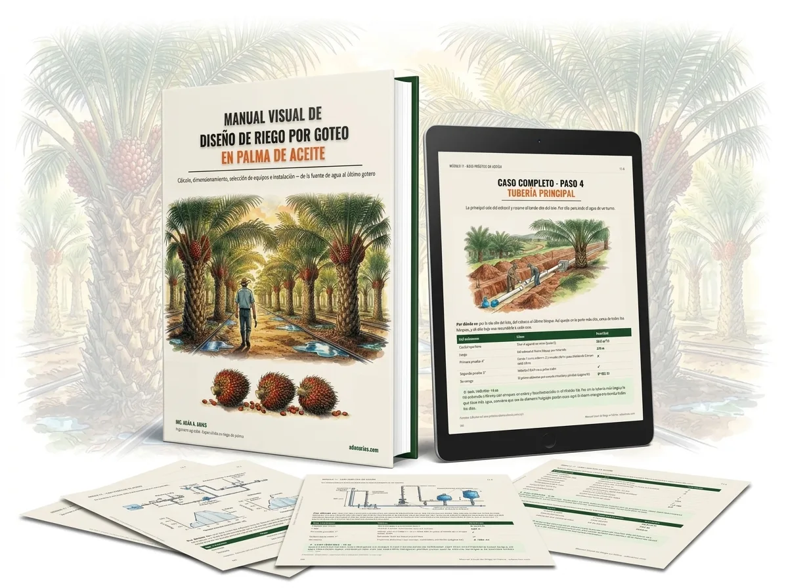
Pago único · manual + 3 bonos
🔒 Pago seguro · ✅ Garantía de 7 días · 📩 Llega a tu correo en minutos
¿Ya lo decidiste? Comprar ahora ↓
¿Te suena alguno de estos problemas?
- Te pidieron el diseño del riego y no sabes por dónde empezar. Tu jefe, tu cliente o tu profesor necesita el proyecto con cálculos, plano y materiales, y el plazo corre.
- No sabes cuántos litros ni cuántas horas regar. Riegas a ojo, gastas agua y energía, y aun así la palma no recibe lo que pide.
- Te venden la bomba y los tubos "por si acaso". Sin saber calcular, terminas pagando equipos más grandes y caros de lo que tu lote necesita.
- Las palmas del final del lote reciben menos agua. Con presión dispareja unas palmas se ahogan y otras pasan sed, y nadie sabe por qué.
- La sequía te cobra la cosecha dos años después. El estrés del verano se convierte en menos racimos casi dos años más tarde, cuando ya no hay nada que hacer.
- Los libros de riego son de hortalizas y están llenos de fórmulas. Nada te explica, paso a paso y con dibujos, cómo se diseña para palma.
Míralo por dentro
Páginas reales del manual: dibujos, cálculos y el caso de 10 ha.
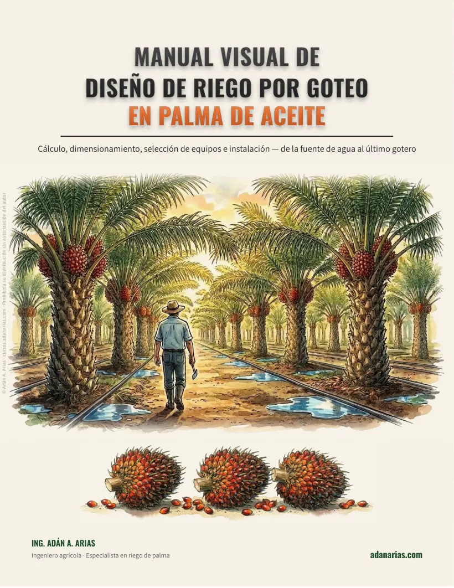
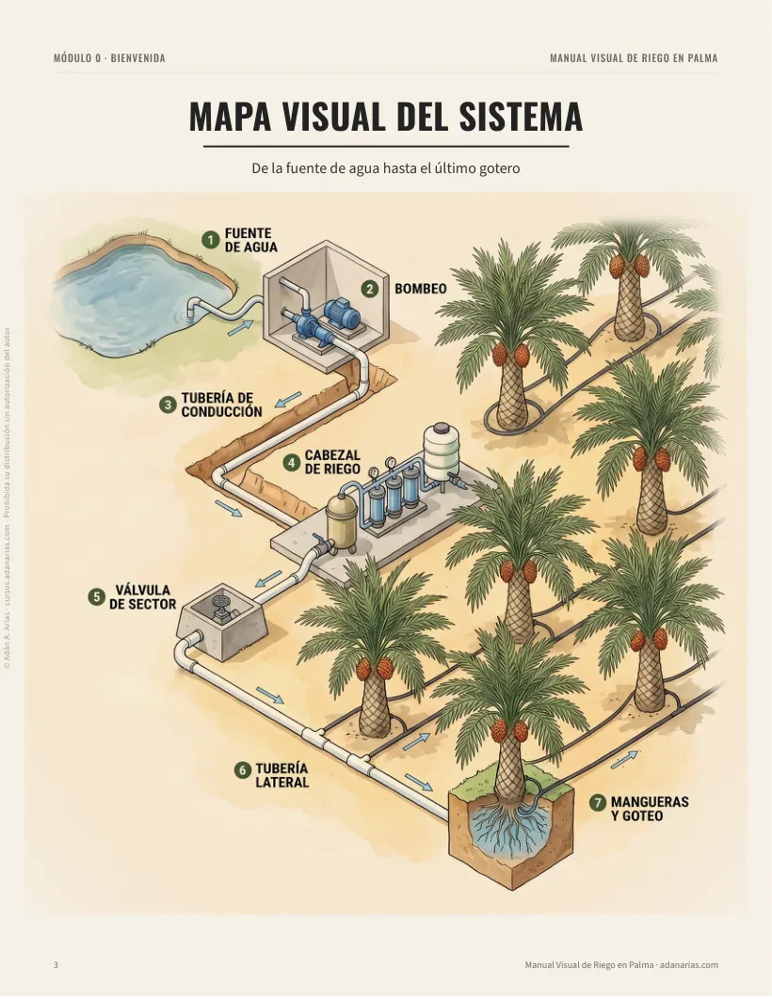
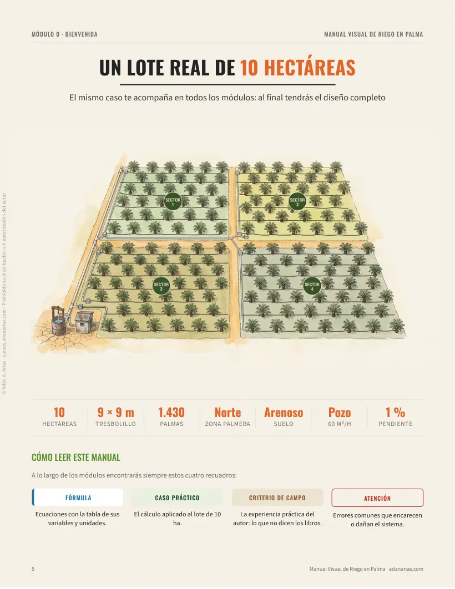
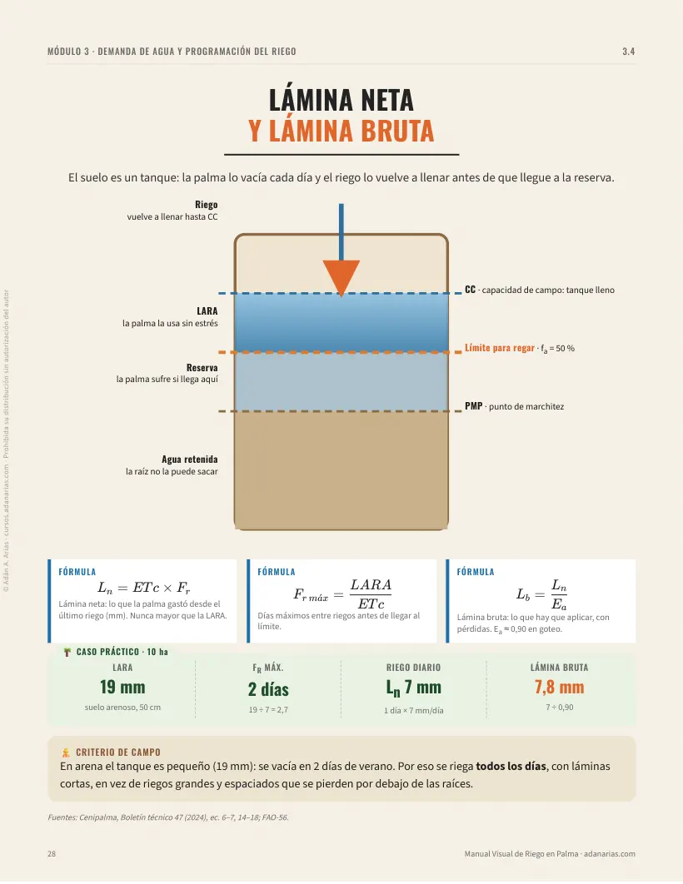
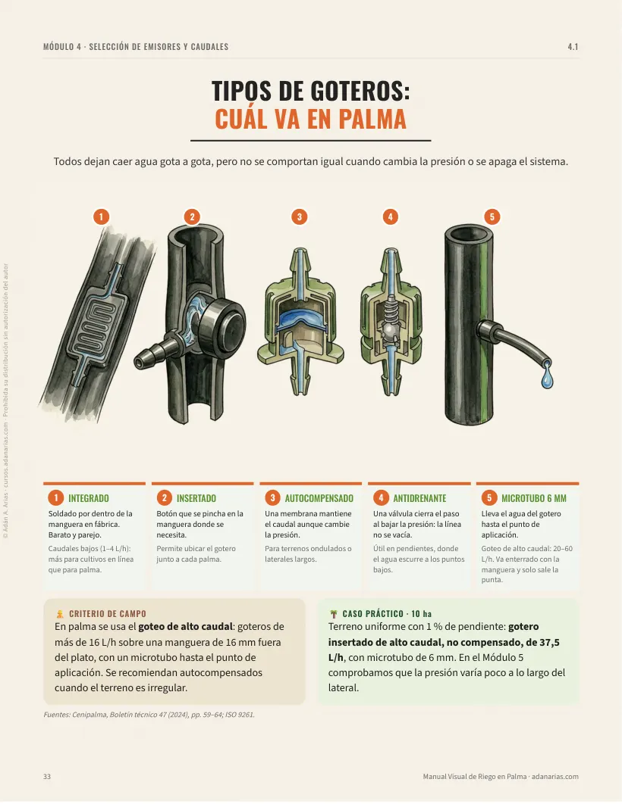
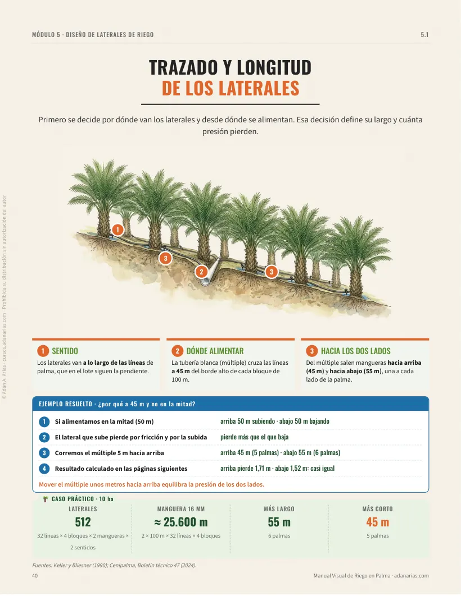
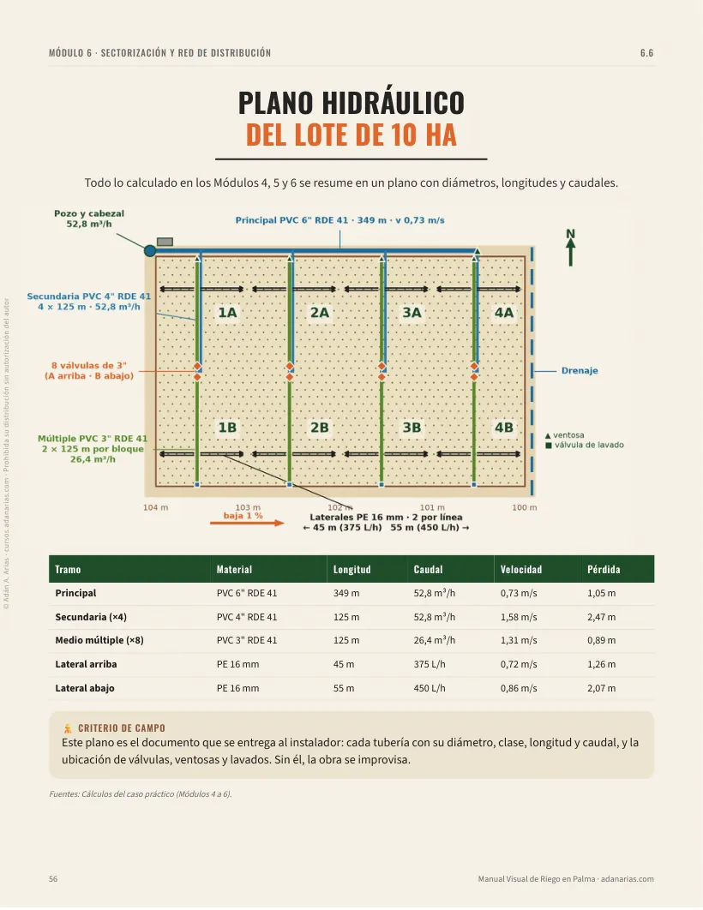
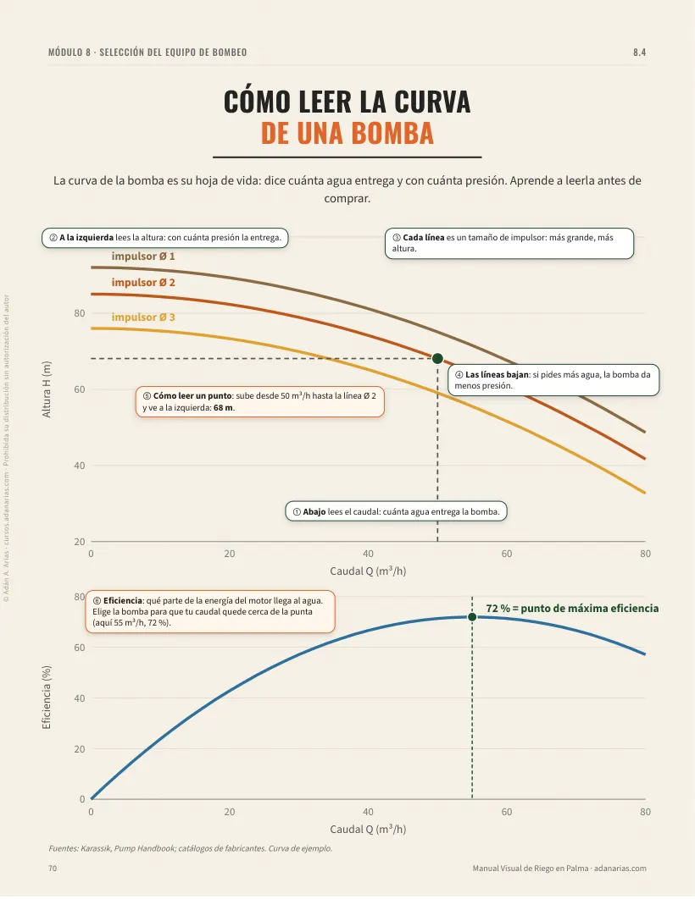
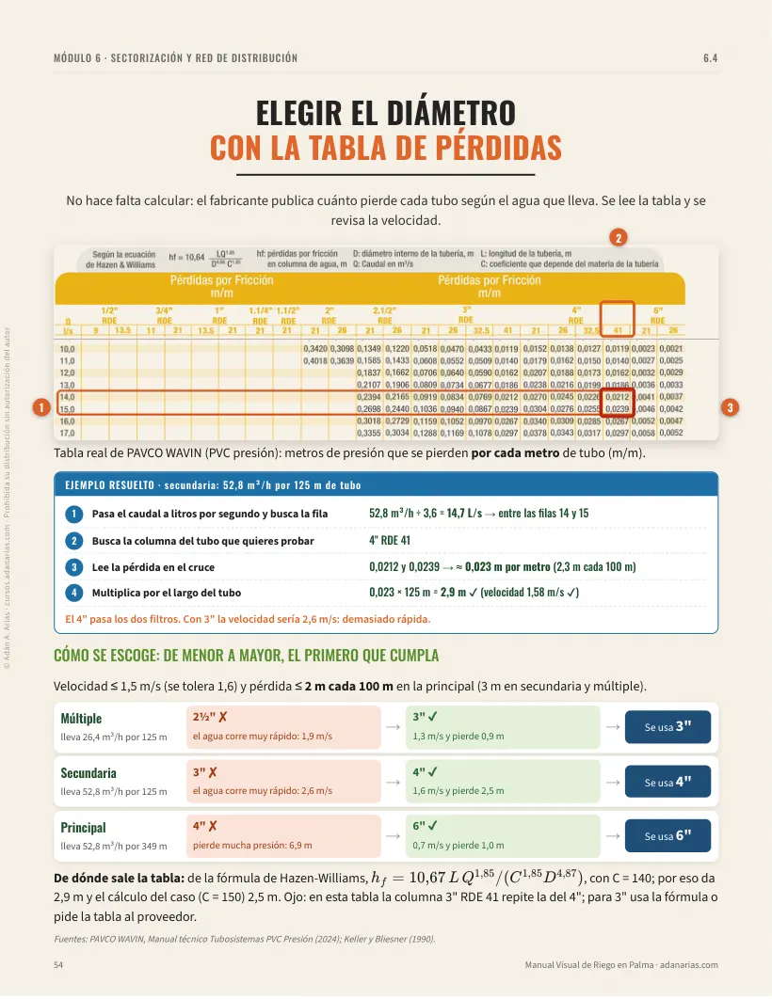
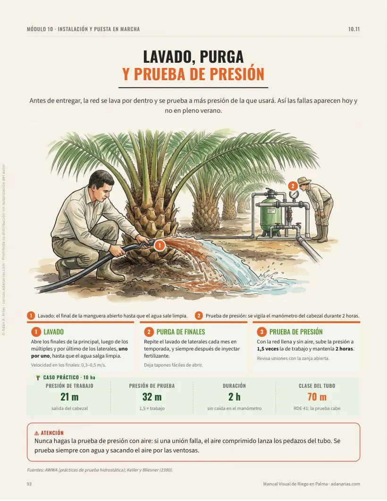
Con este manual vas a poder
- Entregar a tu jefe, a tu cliente o a tu profesor un diseño completo: cálculos, plano, plan de turnos y cuadro de materiales.
- Calcular cuántos litros por palma al día y cuántas horas de riego necesita tu lote.
- Hacer todos los cálculos del diseño: demanda, pérdidas de presión, diámetros, bomba, motor y uniformidad, con ejemplos resueltos.
- Elegir goteros, mangueras, tuberías, filtros y bomba con números, y saber si te están vendiendo de más.
- Comprobar que todas las palmas reciban la misma agua antes de comprar un solo tubo.
- Regar en el mes más seco con turnos que tu pozo sí alcanza, para que la sequía no te cobre la cosecha.
- Aprender paso a paso, con dibujos y un caso real de palma, e instalar con listas de verificación.
Esto es lo que le entregas a tu jefe
Así termina el caso de 10 ha del manual: plano final y cuadro de materiales con presupuesto.
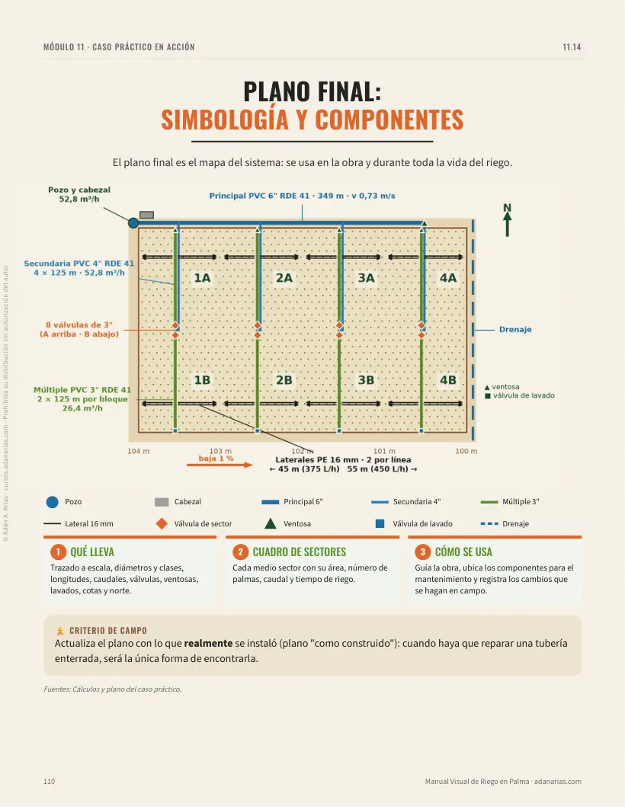
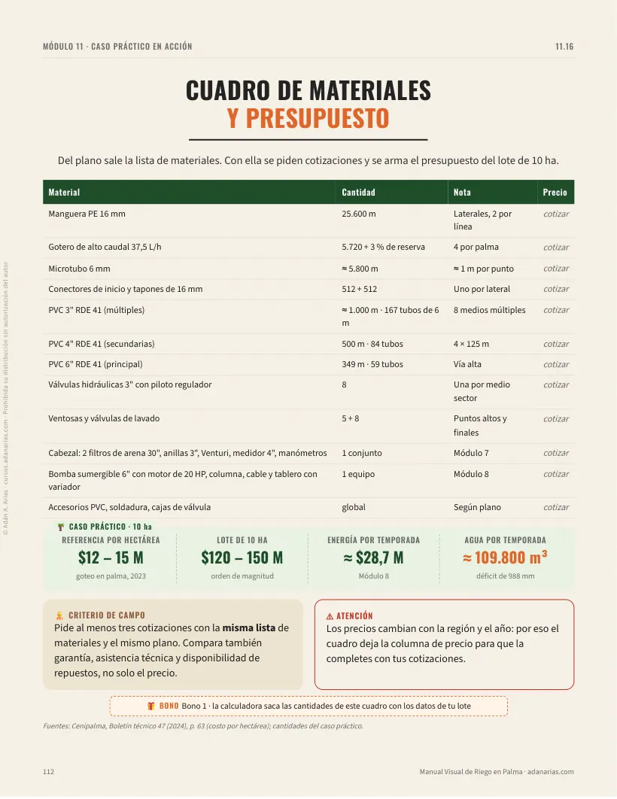
Quién escribió este manual
Soy Adán Arias Angulo, ingeniero agrícola. Llevo 10 años en campo diseñando e instalando riego para empresas de la zona norte de Colombia; he diseñado e instalado más de 1.000 ha y he acompañado el manejo de riego y drenaje en unas 20.000 ha, en distintos cultivos. En este manual reuní, paso a paso y con dibujos, lo que he aprendido para que tú también puedas diseñar el riego de tu lote.
Lo que dicen quienes ya lo tienen
Compradores reales del manual
Módulo 1. La palma de aceite y el agua
- La sequía de hoy se cosecha en dos años: efecto del déficit hídrico.
- Zonas palmeras de Colombia y su régimen de lluvias.
- Sistema radical: dónde hay que mojar.
- Demanda de agua según la etapa de la palma.
- Goteo, microaspersión o gravedad.
- El suelo, el tanque de agua de la palma.
Módulo 2. Datos de campo y bases del proyecto
- Topografía y marco de plantación en tresbolillo.
- Suelo: textura, infiltración y calicata.
- Fuente de agua: caudal, niveles y calidad.
- Datos de clima: dónde conseguirlos.
- Permisos, energía y plano base.
Módulo 3. Demanda de agua y programación del riego
- ETo, coeficiente de cultivo y balance hídrico mes a mes.
- Lámina neta y bruta: de milímetros a litros por palma.
- Frecuencia, tiempo de riego y número de turnos.
Módulo 4. Selección de goteros y caudales
- La presión se mide en metros.
- Tipos de goteros y cómo leer su ficha técnica real.
- Bulbo húmedo y puntos de goteo por palma.
Módulo 5. Diseño de laterales
- Trazado y longitud de los laterales.
- Pérdidas por fricción y factor de Christiansen.
- Perfil de presión en subida y bajada; regla del 20 %.
- Longitud máxima del lateral, palma por palma.
Módulo 6. Sectores y red de distribución
- ¿Me alcanza el agua del pozo? Sectores y turnos.
- Principal, secundaria, múltiple y lateral: dónde va cada una.
- Elegir el diámetro con la tabla real de pérdidas.
- Golpe de ariete, ventosas y plano hidráulico.
- Plan de turnos.
- Página especial: lleva tu diseño a campo con la app Lindero (gratis).
Módulo 7. Cabezal: filtrado y fertirriego
- Hidrociclón, arena, malla y anillas.
- Dimensionamiento y retrolavado.
- Inyección de fertilizantes, medidores y manómetros.
Módulo 8. Selección del equipo de bombeo
- Altura dinámica total y presupuesto de presión.
- Cómo leer la curva de una bomba y elegirla.
- NPSH y cavitación; potencia, motor y variador.
Módulo 9. Comprobación hidráulica y uniformidad
- Balance de presiones bloque por bloque.
- Caudal esperado en los goteros y uniformidad.
- ¿Y si no cumple? Qué cambiar. Hoja resumen para aprobar.
Módulo 10. Instalación y puesta en marcha
- Secuencia de obra: bomba, cabezal, tuberías y válvulas.
- Mangueras enterradas, microtubos y goteros.
- Lavado, prueba de presión, aforo y lista final.
Módulo 11. Caso práctico en acción
- El diseño completo de un lote de 10 ha en 13 pasos.
- Plano final, plan de riego y cuadro de materiales.
- Hoja de trabajo "Mi diseño" para tu propio lote.
Módulo 12. Tablas de referencia
- Fricción en manguera y PVC; laterales según la pendiente.
- ETo por zona palmera, filtros, motores y válvulas.
- Lotes irregulares y glosario.
¿Tienes afán? No tienes que leerlo todo: ve directo al Módulo 11 y sigue el caso de 10 ha paso a paso con tus datos.
Manual visual +3 bonos exclusivos
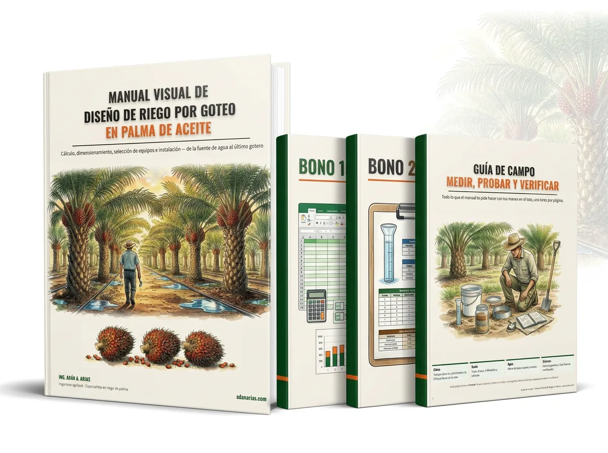
La calculadora hace las cuentas contigo
Escribes los datos de tu lote y la hoja resumen te dice si tu diseño cumple, y dónde corregir si algo falla. Así se ve con el caso de 10 ha:
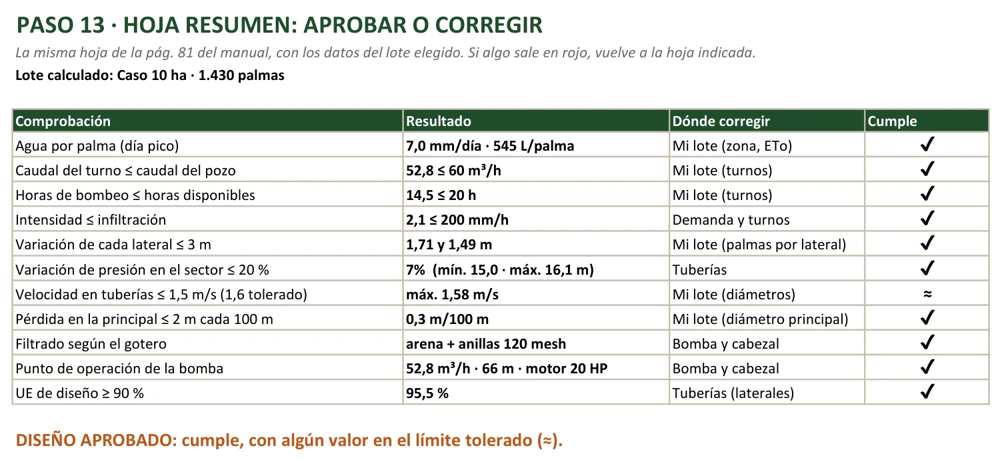
Caso de 10 ha: 10 de 11 comprobaciones cumplen y la velocidad queda en el límite tolerado (1,58 m/s ≤ 1,6). Funciona en Microsoft Excel en el computador.
Preguntas frecuentes
¿De verdad voy a aprender a diseñar un sistema de riego?
Sí. El manual no se queda en teoría: te lleva por todo el diseño en el mismo orden en que se hace en la vida real, desde la fuente de agua hasta el último gotero. Cada cálculo viene explicado con su fórmula, el significado de cada dato y un ejemplo resuelto. Y todo se aplica a un caso real de 10 hectáreas, resuelto en 13 pasos, hasta llegar al plano final, el plan de turnos y el cuadro de materiales. Al final tienes una hoja de trabajo para repetirlo con los datos de tu propio lote, y la calculadora en Excel te ayuda con las cuentas.
¿Cuánto me demoro en tener el diseño?
Depende de tu experiencia y de que tengas a la mano los datos de tu lote (área, fuente de agua, distancias). No tienes que leer todo antes de empezar: en el Módulo 11 está el caso de 10 ha resuelto en 13 pasos, en orden. Lo sigues paso a paso cambiando los datos por los tuyos, y la calculadora en Excel hace las cuentas mientras avanzas. Si te atascas en un paso, me escribes por WhatsApp.
¿Necesito saber de riego o de hidráulica para entenderlo?
No. Está pensado para quien nunca ha diseñado un riego: cada tema empieza con un dibujo que explica la idea, y luego viene el cálculo paso a paso. Si eres ingeniero o técnico, te sirve como guía rápida y para revisar proyectos.
Mi lote no es de 10 hectáreas, ¿me sirve?
Sí. El caso de 10 ha es el ejemplo para que veas cómo se hace todo de principio a fin. El método es el mismo para un lote más pequeño o más grande: cambias los datos (área, fuente de agua, distancias) y repites los pasos. También hay una página para lotes de forma irregular.
¿De dónde salen los cálculos? ¿Mi jefe los va a aceptar?
Cada página cita sus fuentes técnicas: la guía FAO-56 de la FAO para la demanda de agua, Keller y Bliesner (el libro de referencia del diseño de riego localizado), boletines técnicos de palma y catálogos de fabricantes. Los cálculos del caso de 10 ha se presentan completos, con fórmulas y datos, para que puedas sustentarlos.
Mi lote tiene pendiente o el agua sale de un reservorio, ¿me sirve?
Sí. El manual explica cómo medir la topografía, cómo cambia la presión cuando la manguera sube o baja (con tablas de laterales según la pendiente) y cómo evaluar la fuente de agua: pozo, reservorio, río o canal.
¿Necesito saber usar Excel?
Solo lo básico: escribir números en las casillas. La calculadora ya trae las fórmulas; tú pones los datos de tu lote y ella hace las cuentas. Se usa en Microsoft Excel en el computador (Google Sheets no abre archivos protegidos con contraseña).
¿Cómo y cuándo me llega?
Apenas se aprueba tu pago, te llegan dos correos en pocos minutos: uno con el manual en PDF y otro con los 3 bonos. Si no los ves, revisa la carpeta de correo no deseado o escríbeme por WhatsApp.
¿Cómo abro los archivos?
Para que tu copia sea solo tuya, los archivos vienen protegidos con una contraseña: tu número de celular, el mismo que escribes al pagar (sin +57). El correo te lo recuerda. Se abren en el computador, la tablet o el celular.
¿Qué pasa el 7 de noviembre?
Termina el precio de lanzamiento: después el manual con sus 3 bonos vale $79.900.
¿Cómo puedo pagar?
Con tarjeta de crédito o débito, PSE, Nequi o botón Bancolombia, a través de Wompi, la pasarela de pagos de Bancolombia. Es un pago único, sin suscripciones.
Todo lo que recibes hoy
- 📘 Manual Visual de Riego por Goteo en Palma 126 páginas ilustradas, PDF
- 🧮 Bono 1: Calculadora de diseño en Excel
- 📋 Bono 2: Formatos de lluvia, evaporación y balance
- 🧭 Bono 3: Guía de campo para medir, probar y verificar
Precio de lanzamiento hasta el 7 de noviembre; después vale $79.900.
- 1. Wompi te pide tu correo, nombre y celular, y eliges cómo pagar.
- 2. Pagas con tarjeta, PSE, Nequi o botón Bancolombia.
- 3. En minutos te llegan a tu correo el manual y los 3 bonos.
garantía
Garantía de 7 días
Compra tranquilo. Si en los primeros 7 días sientes que el manual no te sirve, te devuelvo tu dinero completo. Sin preguntas difíciles.
Cómo pedirla: escríbeme por WhatsApp o al correo con la referencia de tu pago (llega en el correo de Wompi) y te devuelvo el valor completo.
Al dar clic en "Comprar ahora" aceptas los términos y condiciones. El manual es para uso personal: cada copia lleva el nombre del comprador.